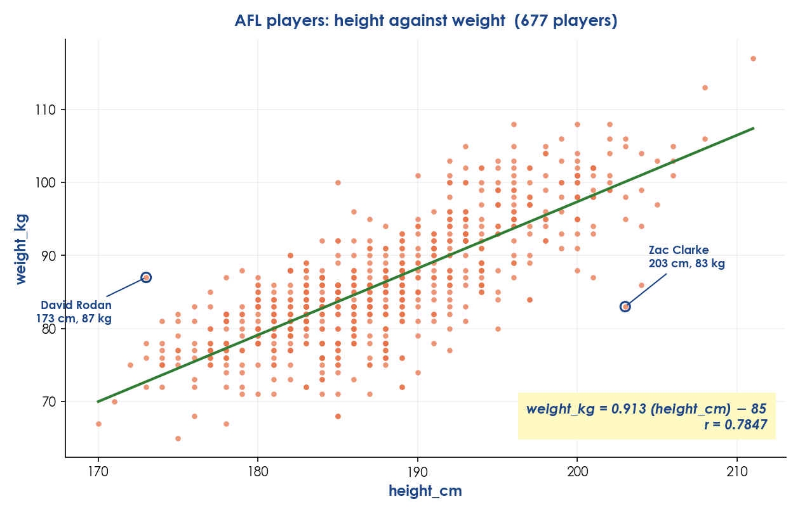
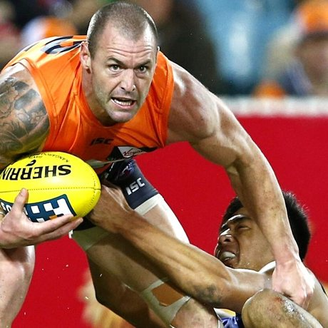
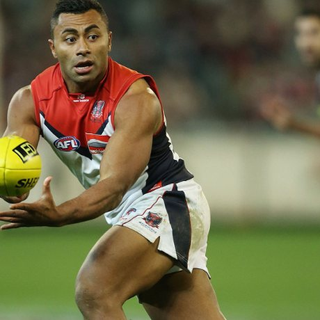
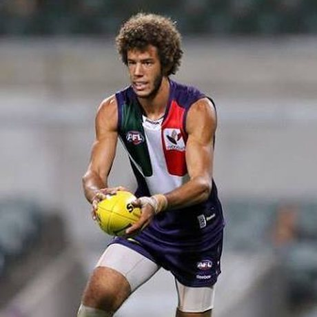
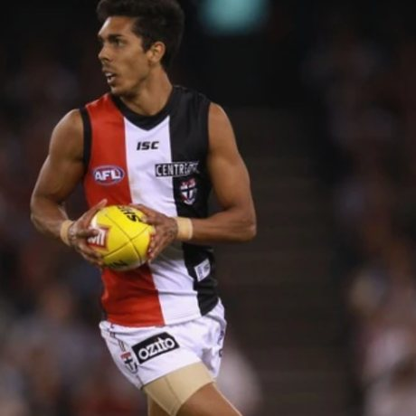

Read this first
This example uses AFL height against weight, so that pairing is now spent. You can still use the AFL file, you just have to ask a different question of it, and there are plenty in there: does court time… sorry, does a ruckman's weight sit above the pattern for everyone else? Are forwards and defenders built differently? Pick your own and the work is yours.
ABefore you touch the data
All of this happens on paper. It is the part people skip, and it is the part that decides whether the rest works.
1 and 2. The data, and the question
Dataset, and what one row is
AFL players. One row is one AFL player. 677 rows.
The question, in the house shape
Is there a relationship between height and weight in AFL players?
3. Which variable goes where
Across the bottom (x)
Height, in cm.
Up the side (y)
Weight, in kg.
Why that way round
Taller means a bigger frame, which will probably carry more mass. Height is doing the influencing. Gaining weight does not make you taller.
4. Call it before plotting
I think the dots will
Go up and to the right.
Because
Taller players are simply bigger, so more height should mean more weight.
BBuild the plot

6. First look, before naming anything
Any missing data?
Some players have no position listed, but every height has a matching weight, so nothing was dropped from the plot.
Reading left to right, the dots
Drift up and to the right.
Any dot well away from the pack?
Two, at opposite extremes. David Rodan is a tank: 173 cm and 87 kg, heavy for his height. Zac Clarke is a skinny legend: 203 cm and only 83 kg, so he is 17 kg lighter than the line expects.
Was the prediction right?
Generally yes, but with plenty of exceptions, and more players sit below the line than above it.
The four dots furthest off the line
Every dot on that plot is a real person. These four are the ones the line gets most wrong, two heavier than it predicts and two lighter. The gap between a dot and the line has a name: the residual.




CName it, then fit the line
7 and 8. The sentence, then r
The house sentence
There is a strong, positive, linear association between height and weight in AFL players.
r from CODAP, and does the sign agree?
r = 0.7847. The line runs uphill and the sign is positive, so the number and the picture agree.
Which band, and does it match Question 7?
0.78 sits in the 0.75 to 1 band, so strong. First guess was “moderate”, so Question 7 got corrected.
9. The line, in English
Equation
weight_kg = 0.913 (height_cm) − 85
The gradient means
Every extra centimetre of height is worth about 0.913 kg more weight.
The y-intercept
−85 kg. It is nonsense here. It claims a player of no height weighs minus 85 kg. The line only means anything across the heights actually in the file, 170 cm to 211 cm.
10 and 11. Predict, then argue with yourself
Predict for a 188 cm player
weight = 0.913 × 188 − 85 = 86.4 kg
Inside or outside the data, and do you trust it?
Inside: 188 cm sits comfortably among the players in the file, so the prediction is worth something. Feed it a newborn baby at 50 cm and it returns −39 kg, which is exactly what extrapolation gets you.
DThe honest answer
12. Why are they related?
Most likely explanation
Number 1, x causes y. A longer frame carries more bone and more muscle, so height drives weight rather than the other way round.
A lurking variable
Body volume. Height is tied to volume and weight is tied to volume, so the two move together partly because both are really tracking size.
13. The answer, in plain English
The answer, quoting r and a number off the line
Yes, taller AFL players are generally heavier. r = 0.78 is a strong positive association, and the line says every extra centimetre is worth about 0.9 kg. It is a trend, not a rule.
One thing this data cannot tell you
Why any individual player is heavy. Rodan at 173 cm and 87 kg is not explained by height at all, and nothing in this file records muscle, playing position demands or training load.
14. Extension: split it by position
Comparing the groups
Ruckmen sit higher in the middle than midfielders or forwards, and forwards are the most spread out of the three. Which is a reminder that one line across all 677 players is hiding several different body types.
What made this one work
- The question named two number columns and nothing else.
- Every number came back with its units attached.
- It described the plot before naming the pattern.
- The first guess at strength was wrong, and got fixed once r appeared.
- It says what the data cannot do, not just what it can.